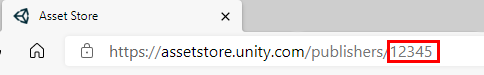
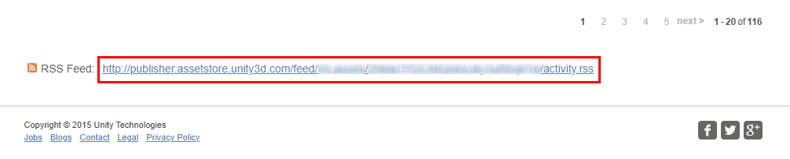

Where can I find my Publisher ID?
Your Publisher ID is the ID on which the Asset Store APIs refer to you as Publisher. This same ID can be found at the URL of your store Home Page. As shown in the image below.

Where can I find my Reviews RSS URL?
Your Reviews RSS URL is a URL that displays all the latest Reviews made for your Assets. It can be found in the "Reviews" tab on your Publisher Portal in the Asset Store.

Page generated by Publisher Tools For Asset Store Extension